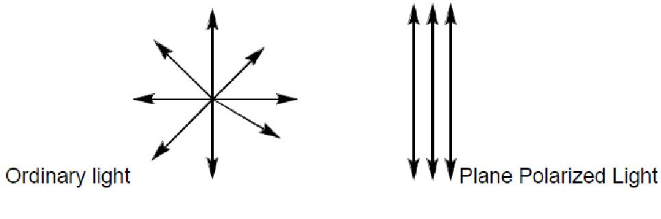

The study of optical activity of liquids began in the early 19th century with Biot and other scientists. They found that solutions of sugar and certain other naturally occurring chemicals would rotate a beam of polarized light passing through the solution. They called such substances optically active, a term which is still used. The instrument used to demonstrate or to measure this rotation was given the name polarimeter.
Clockwise rotation is given a positive (+) sign; counterclockwise rotation is given a negative (-) sign. Certain substances rotate light to a much greater extent than others. Both the direction of rotation and the amount of rotation per gram of solute in a given volume of solution are characteristic properties and can be used to identify an unknown substance. When the identity of the solute is known, the polarimeter can be used to determine the concentration of the solution.
It may be noted that approximately 25% of all drugs are marketed as either racemates (mixtures of two enantiomers) or mixtures of diasteromers. The orientation around a chiral center can have a dramatic impact on the pharmacological response of that drug in the human body. Such recent observations brought about severe tightening in the laws surrounding the introduction of new drugs into the market. Thus, chiral synthesis and purification became a crucial aspect of all successful drug manufacturing procedures. This is just one of the several areas highlighting the importance of polarimetric studies.
Since polarized light is the basis for all studies of optical activity, you are advised to review the "Background principles" described in the home page of this laboratory. In particular, please go through the tutorials in the pages:
http://www.enzim.hu/~szia/cddemo/edemo1.htm and
http://www.enzim.hu/~szia/cddemo/edemo9.htm

Chirality and optical activity:
Chiral molecules have an asymmetrical center which respond to light as a lens and rotate the light. The ability to rotate light is termed optical activity and substances that exhibit this property are called optically active substances. Optically active organic molecules have a spiral structure like a right-handed or left-handed screw. It is this spiral nature of the molecule, which rotates the plane of polarization of light passing through it. Right-handed molecules will rotate the plane of polarization clockwise as viewed in the direction of the beam, while left-handed molecules rotate the plane in a counter clockwise direction. If right-handed and left-handed species of a given molecule occurred with equal abundance, then there would be no net effect on the polarization of light passing through. However, naturally occurring biological molecules of a given species are always either purely right-handed or purely left-handed. However, these enantiomer compounds rotate light by exactly the same amount but in the opposite direction. The degree to which a substance rotates light may be used to determine a) the identity of the substance, b) the enantiomer purity of the substance or c) the concentration of a known substance in a solution. In order to observe rotation, the light which is passed through the solution must be plane polarized. Ordinary light has waves which are oriented in all directions. Plane polarized light is made up of waves which are oriented parallel to a defined plane.
|  |
When a beam of plane polarized light passes through a solution of optically active material the light will rotate.

|
This is because, when light interacts with matter, two basic phenomena occur, namely, absorption and the decrease in the velocity of light. Absorption is the decrease in the intensity of light because a part of the incident light is absorbed by the material. The decrease in velocity of light is due to refractive index of the material, because the velocity of light is smaller in the material than in the vacuum.
If the refraction index of the material differs between left and right circularly polarized light, then such materials are shown to exhibit a phenomenon called circular birefringence. Circular birefringence rotates the plane of polarization of the resultant plane-polarized light. This is termed as optical rotation. The angle by which the polarization plane of the light exiting the medium rotates with respect to the original polarization plane is determined by the difference between the refraction indices for the two circularly polarized components (and on the length of path traversed in the medium). Any molecule which exhibits optical rotation or make plane-polarized light elliptically polar is called an optically active material.
How do chiral molecules exhibit Optical Rotation?
Interestingly, a monochromatic linearly polarized light beam can be considered as a superposition of two circularly polarized electromagnetic waves that are propagating in the same direction with the same frequency but the opposite sense of rotation. The plane of polarization of the resulting linearly polarized wave thus prepared can be changed (rotated) by applying a phase shift between its two circularly polarized components. With the help of this concept we can explain the phenomenon of optical rotation: We have seen that chiral molecules interact slightly differently with the two circularly polarized components of a linearly polarized light beam. This is true both for absorption and refraction. Left- and right hand circularly polarized light beams also have slightly different refractive indices in a chiral medium. This means that even if they are not absorbed they travel at different speeds through the medium. Therefore, this causes a phase shift between the two circularly polarized components which increases proportional to the path length that the light travels through the chiral medium. This phase shift manifests itself as a rotation of the plane of polarization of the resultant linearly polarized light beam - optical rotation.
The degree of rotation of the plane polarized light depends on the wavelength of the light (usually, the yellow sodium D line near 589 nm wavelength is used), the optical path length, the concentration of the solution, and the chemistry of the molecule. Under identical conditions, some molecules rotate polarized light more than the others do. In order measure how good chiral molecules rotate plane- polarized light, a term called as the "specific rotation" was coined. The specific rotation of a substance is an intrinsic characteristic similar to other properties such melting point, or solubility. By convention, the specific rotation of a chemical is defined as the observed rotation when light of a specified wavelength passes through sample path length of one decimeter (1 dm = 10 cm) and a sample concentration of 1 g/mL.
Circular birefringence and optical rotation
Chiral molecules exhibit circular birefringence, which means that a solution of a chiral substance presents an anisotropic medium through which left circularly polarised (L-CPL) and right circularly polarised (R-CPL) propagate at different speeds. A linearly polarised wave can be thought of as the resultant of the superposition of two circularly polarised waves, one left-circularly polarised, the other right-circularly polarised. On traversing the circularly birefringent medium, the phase relationship between the circularly polarised waves changes and the resultant linearly polarised wave rotates. This is the origin of the phenomenon known as optical rotation, which is measured using a polarimeter. Measuring optical rotation as a function of wavelength is termed optical rotatory dispersion (ORD) spectroscopy.

|
Circular birefringence:the orange cuboid represents the sample
For pure liquids:
[α]Tλ = α/(l * d)
In this equation,
l is the path length in decimeters
d is the density of the liquid in g/mL for a sample at a
temperature T (given in degrees Celsius) and wavelength λ (in nanometers).
If the wavelength of the light used is 589 nanometer (the sodium D line), the symbol “D” is used. The sign of the rotation (+ or -) is always given.
For solutions, a different equation is used:
[α]Tλ = 100 * α/(l * c)
In this equation,
l is the path length in decimeters
c is the concentration in g/100mL for a sample at a
temperature T (given in degrees Celsius) and wavelength λ (in nanometers).
When using this equation, the concentration and the solvent are always provided in parentheses after the rotation. The rotation is reported using degrees, and no units of concentration are given (it is assumed to be g/100mL).
Functioning of the polarimeter
a

|
b

|
Fig. 1: Schematic representation of the functioning of the polarimeter.
a. When the sample tube is empty, the planes of polarization of the polarizing and the analyzing prisms are same and αobs is 0°
b. When the sample tube has a solution of a chiral (optically active) substance, the plane of polarization of the emergent polarized light changes. One now needs to rotate the analyzer prism for its plane of polarization to coincide with the plane of the emergent light. This corresponds to the maximum intensity of the transmitted light. The αobs is shown with a green arrow.

The purpose of this lab is to use optical rotation as a method for determining the identity of unknown sugars. By doing this experiment the user will be able to:
- Understand the interaction of plane polarized light with solutions of chiral substances
- Understand various processes and techniques involved in measuring the optical activity of sugar solutions using polarimeter.
- Understand the step-by-step procedure including most details from preparing the sample to identification of sugar solution used as part of the experiment.


In this experiment, the user will prepare a sugar solution of known concentration (c), but unknown identity. The user will obtain the observed rotation (αobs) from the experiment using the polarimeter and use that information to calculate the specific rotation [α] of the given sample using the above formula. The identity of the sample can thus be found out from the given list of specific rotations for different chemicals.
The procedure to perform this experiment is self-explanatory and leads the user in a step-by step manner to accomplish the task. The protocol briefly involves the following steps:
- User will click on the virtual lab link (simulator).
- To know details regarding the instrumentation of the polarimeter.
- To directly perform an experiment using the polarimeter.
- Estimate the specific rotation [α] using the equation for liquids.
- Compare the obtained specific rotation [α] value against the table provided below to identify the identity of the sugar used in the experiment.
- Click on save form and perform calculations and choose the appropriate identity of the unknown sugar you have used in the experiment.
- Either click on “Click to restart the experiment” and follow the instructions from step 3 or “Click to try with same sample sugar” and follow the instructions from step 3, substep (ii).
i.Click on “Know Your Polarimeter” option.
ii.Click on the Polarimeter to Zoom-in as indicated by an arrow.
iii.Click on the red button provided to switch on the polarimeter and to see the light source in the polarimeter instrument.
iv.Click on the panel indicated by arrow to open the sample chamber.
v.After you see 100% Intensity of the light coming through the eye piece at α20Dthen click Continue.
vi.Click on the button “click to record experiment without login” to perform an experiment and further follow instructions as detailed in step 3.
i.Click on any of the 6 sugar sample in the bottles on the shelves.
ii.Type in the amount of sugar (in gm/100mL) that you want to use for the experiment in the text box provided and then presses enter on the keyboard.
iii.Click on one of the sample cells to transfer the prepared sugar solution into a cell of particular path length.
iv.After transferring the contents into the sample cell, click on the sample cell to place it into the polarimeter’s sample chamber.
v.Click on the power button to switch on the polarimeter to record the optical rotation of the sample.
vi.To rotate the dial of the eye piece in clockwise direction click on ‘+’ button and for anticlockwise direction click on ‘-’ button.
vii.To change the Increment Factor click on the IF* buttons 1, 5 or 10 accordingly.
viii.Rotate the dial both in clockwise and anti-clockwise directions for the whole 360o until you see a maximum light intensity in the right semicircle, matching the left semicircle exactly.
ix.Click on open record form and note down all the 4 different αobs angles where you observed maximum Intensity.
| Chemical name | Specific rotation[α]20D |
| D-glucose | +52.7 |
| Lactose | +55.4 |
| D-fructose | -92.4 |
| L-arabinose | +104.5 |
| D-mannose | +14.2 |
| D-arabinose | +105.0 |
| D-xylose | +18.8 |
| D-galactose | +80.2 |
| Sucrose | +66.5 |
| Maltose | +130.5 |
| Dextrin | +195 |
*NOTE: While doing the experiments you will notice that if the maximum intensity of light is observed at x° degree, it is also observed at (180+ x)° degree. From a single experiment, it is not possible to infer which the value for total rotation αtotal actually is. Then again, the observation only tells us about the orientation of the plane of polarization of the emergent light relative to that of the incident light. However, one can not off hand say anything about what is the actual total rotation the plane has undergone. Thus, for example, the observation of maxima at x° and at (180 + x)° may mean that the value of αtotal could also be (360n + x) °; where n = 0, 1, 2, … Similarly, it could also be that αtotal is -(360 - x)° or –(360 - (180 + x))° depending on whether the rotation of the light has taken place in the anticlockwise or clockwise direction. For example if the maximum intensity is observed at α value of 30° and 210° , then could be any one of the values: 30°, 210°, -330°, -150° or even 390° or 570°. To confirm the actual value of αtotal, one needs to repeat the experiment using different concentration and variable path lengths. Though there would be an ambiguity regarding the αtotal for each of these experiments, the correct choices would provide the same specific rotation [α]Tλ or [α]20D
Sample data for the experiment

Click here to have a self evaluation.

- Basic Concepts of Stereochemistry
- Description of polarimetry, optical activity and specific rotation:
polarimeters_in_college_chemistry_courses.doc - Polarimetry_ORD_CD_Chapter.pdf
- Animated Tutorial Explaining Electromagnetic waves and types of polarization:
http://www.enzim.hu/~szia/cddemo/edemo1.htm - To try your own EMANIM animation of the CD concepts with variable parameters, Please download the software from:
http://www.enzim.hu/~szia/emanim/emanim.htm